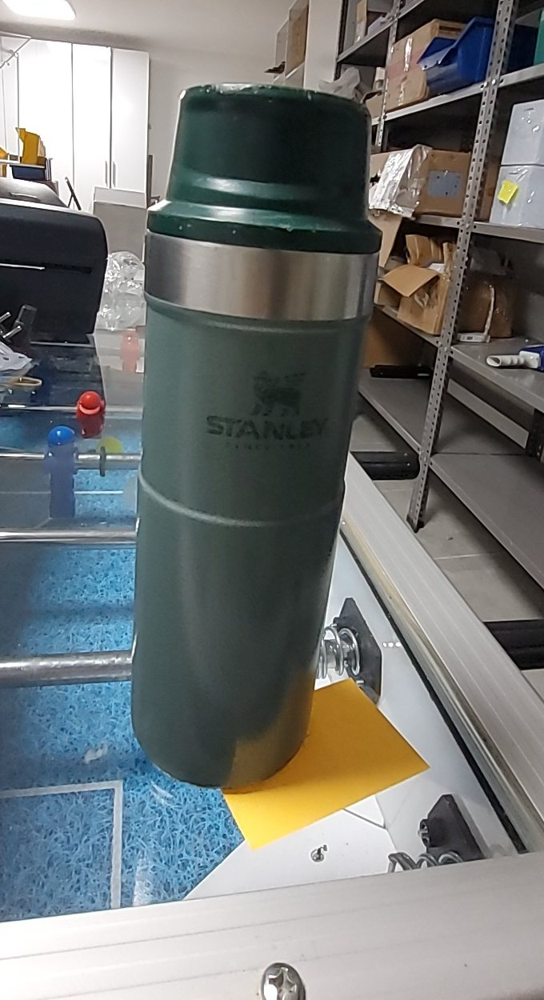
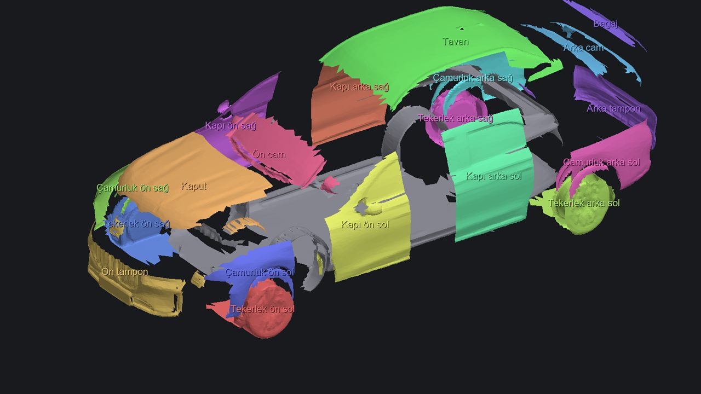
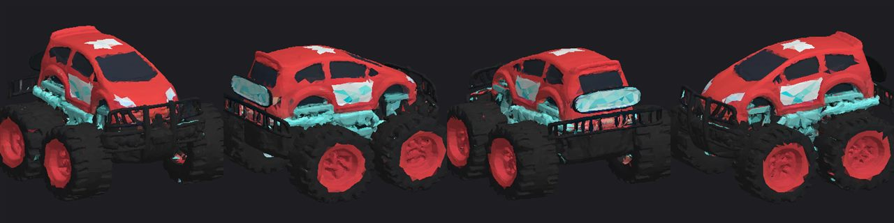

Projeler / Foto3D Stüdyo
Foto3D Stüdyo
Fotoğraflardan gerçek 3D geometri üreten, modeli parça parça düzenleyen ve Unity, Unreal, Godot'ya aktaran Windows uygulaması. Ücretli servis kullanmaz.
Telefonla çek, 3D'ye dönüştür
Soldaki termosu telefonla çektim; sağdaki model Foto3D ile o fotoğraflardan üretildi. Modeli parmağınızla ya da farenizle döndürüp yakınlaştırabilirsiniz.



Özellikler
Sürüm 0.1.0 · Türkçe ve İngilizce arayüz, basit ve gelişmiş mod.
- Tek fotoğraftan 3DÜcretsiz bulut GPU ile dokulu, ayrıntılı 360° model ya da saniyeler içinde derinlik kabartması.
- Çoklu fotoğraftan 3DFarklı açılardan çekilmiş fotoğraflarla daha doğru geometri.
- Parça düzenlemeGizle, sil, çoğalt, birleştir, ayır, taşı, döndür, ölçekle, renklendir.
- Simetri ile tamamlamaEksik kalan tarafı aynalayarak tamamlar (ör. otomobilin sol-sağ tarafı).
- Gerçek ölçüUzunluk, genişlik, yükseklik girerek modeli doğru boyuta getirme.
- Oyun motoruna aktarmaGLB/glTF, OBJ, STL, PLY ve FBX; LOD üretimi ve Blender entegrasyonu.
Gereksinim: Windows 10/11 (64 bit). İndirme bağlantısı yayınlandığında bu sayfaya eklenecek.